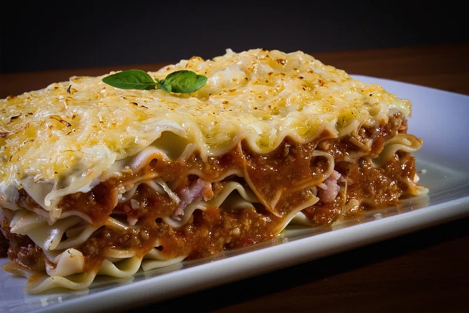

This is a delicious, 10-step homemade lasagna recipe with a meaty, made-from-scratch tomato sauce and a deliciously cheesy filling. A more traditional homemade lasagna filling would be made with ricotta but this recipe calls for a blend of small-curd cottage cheese and Parmesan. Serve with a leafy green salad and crusty garlic bread.
½ pound ground pork
½ pound lean ground beef
½ cup minced onion
1 (28 ounce) can crushed tomatoes
1 (8 ounce) can tomato sauce
2 tablespoons chopped fresh parsley, divided
1 clove garlic, crushed
1 ½ tablespoons dried basil
1 ½ tablespoons salt
½ tablespoons dried oregano
⅛ teaspoon white sugar
1 (16 ounce) package lasagna noodles
1 pound small-curd cottage cheese
¾ cup grated Parmesan cheese
3 large eggs
2 teaspoons salt
¼ teaspoon ground black pepper
1 (16 ounce) package shredded mozzarella cheese
Gather all ingredients.
Combine pork and ground beef in a large, deep skillet over medium-high heat; cook and stir until browned and crumbly, 5 to 7 minutes.
Add onion and cook until translucent, about 5 minutes.
Stir in crushed tomatoes, tomato sauce, 1 tablespoon fresh parsley, garlic, basil, salt, oregano, and sugar. Reduce heat to medium-low and simmer, stirring occasionally, for 30 minutes.
While the sauce is simmering, bring a large pot of lightly salted water to a boil. Cook lasagna noodles in the boiling water, stirring occasionally, until tender yet firm to the bite, 8 to 10 minutes. Drain and set aside. While the noodles are cooking, preheat the oven to 375 degrees F (190 degrees C).
Mix cottage cheese, Parmesan cheese, eggs, remaining 1 tablespoon fresh parsley, salt, and pepper in a large bowl until combined.
Assemble lasagna: Spread a spoon or two of sauce over the bottom of a 9x13-inch baking dish just to to coat it. Place two layers of noodles over the sauce to cover.
Layer with 1/2 of the cheese mixture, 1/2 of the remaining sauce, and 1/2 of the mozzarella cheese. Repeat layers once more using the remaining noodles, cheese mixture, sauce, and mozzarella. Cover the baking dish with aluminum foil.
Bake in the preheated oven for 30 to 40 minutes. Remove the foil and bake until cheese is golden brown, 5 to 10 more minutes.
Remove from the oven and let stand for 10 minutes before cutting and serving.